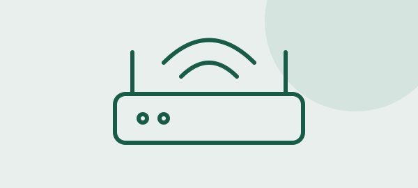

Router
El router conecta redes y dirige los paquetes hacia su destino. En una casa suele conectar la red local con la del proveedor de Internet. Aunque algunos equipos también ofrecen Wi-Fi, el enrutamiento y la conexión inalámbrica son funciones diferentes.